Client installation by the Installer
A.V.A.T.A.R offers a PowerShell application for automatic installation.
For those who want full control, you can also install it manually. Simply open "Manual installation" and follow the section corresponding to your platform.
Danger
The “Installer” application will delete an existing version in the same installation directory.
If you reinstall A.V.A.T.A.R Client, remember to backup your plugins!
To backup and restore them, you can use the Backup/Restore command in the A.V.A.T.A.R. menu.
Preparing the package
- Download A.V.A.T.A.R client zip file from GitHub.
- Click on the
 button and
button and Download zip.
- Click on the
- Extract the
A.V.A.T.A.R-Client-master.zipfile using "Extract or Extract here" selection. -
Run PowerShell regarding the platform:
Warning
Check the PowerShell version, it must be 7.0 or higher.
If the version is lower than 7.0, see the PowerShell section for more information.-
Select and run PowerShell from "All applications" menu by a right click and "Run as Administrator".
Warning
Run PowerShell as Administrator !
Otherwise, the installation program will generate errors when creating certificates. -
Change to A.V.A.T.A.R-Client-master/ directory.
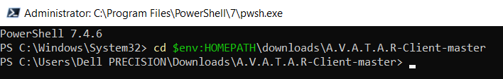> cd $env:HOMEPATH\downloads\A.V.A.T.A.R-Client-master
- Open a terminal
- Change to downloads/A.V.A.T.A.R-Client-master directory.
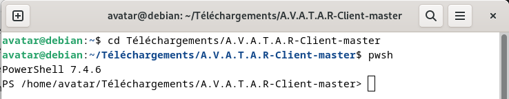
$ cd downloads/A.V.A.T.A.R-Client-master $ pwsh
- Open a terminal
- Change to downloads/A.V.A.T.A.R-Client-master directory.
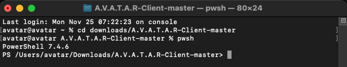
% cd downloads/A.V.A.T.A.R-Client-master % pwsh
-
Start the installer
Parameters
Below are the mandatory and optional parameters that can be added to the command:
Parameter |
Windows | linux | macOS | Comment |
|---|---|---|---|---|
-help |
Display help about the Installer. | |||
-directory |
Windows: mandatory parameter. The installation can be made only in a directory. You must enter a full path.linux and macOS: optional parameter. The installation is made in this directory. The user home directory is automatically added with the directory. |
|||
-application |
Windows: Unable to install the client as Windows application.linux and macOS: optional parameter. The client is installed as an application. The directory is automatically set. |
|||
-shortcut |
Windows: optional parameter. If it is present, an application shortcut is created on the desktop.linux: optional parameter, only for the -directory parameter. If it is present, a client shortcut is created in the dock.macos: A shorcut is automatically created. |
|||
-updateChrome |
Update the embedded Google Chrome only. Let's take the case where there already exists a client on the platform in another directory, for example a development client. Installing another client will modify the Chrome installation and the development client will no longer work. In that case, use this option to update Chrome only on the development client. Must be used with the -application or -directory parameter to specify the location of the application. |
|||
-usecertificate |
Let's take the case of another client that already exists on the platform. We want to create a 2nd client, for example, for development purposes. If we create a new HTTPS certificate with the installation, it will replace the existing certificate, which will no longer work. Enter the path to the HTTPS certificate to be used in this parameter and the installation will add it to the new client. | |||
-nocertificate |
No HTTPS certificate created if this parameter is set. Same example case of the -usecertificate except that no HTTPS certificate is used for the new client. |
|||
-onlycertificate |
Use this parameter to create HTTPS certificate only. This parameter must be used with at least the -directory or -application parameter in order to copy the certificate to the client directory. |
Examples
- Installing the client in the "c:\avatar\client" directory and no desktop shortcut:
./installer.ps1 -directory "c:\avatar\client" - Installing the client in the "c:\avatar\client" directory with a desktop shortcut:
./installer.ps1 -directory "c:\avatar\client" -shortcut - Installing the client in the "c:\avatar\client" directory with using existing certificates
./installer.ps1 -directory "c:\avatar\client" -usecertificate "C:/packager/client/certificates/hote" - Creating and installing certificates in the "c:\avatar\client" directory only (the client application must exists in the directory)
./installer.ps1 -directory "c:\avatar\client" -onlycertificate - Using existing certificates and installing them in the "c:\avatar\client" directory only (the client application must exists in the directory)
./installer.ps1 -directory "c:\avatar\client" -usecertificate "C:/packager/client/certificates/hote" -onlycertificate - Update Chrome only for the client installed in the directory "c:\avatar\client"
./installer.ps1 -directory "c:\avatar\client" -updateChrome
- Installing the client as an application
./installer.ps1 -application - Installing the client in the "avatar/client" directory (The $HOME is automatically added):
./installer.ps1 -directory "avatar/client" - Installing the client in the "avatar/client" directory with using existing certificates:
./installer.ps1 -directory "avatar/client" -usecertificate "Users/<user>/Desktop/packager/client/certificates/hote" - Creating and installing certificates only in a client application:
./installer.ps1 -application -onlycertificate - Using existing certificates and installing them in the "avatar/client" directory only (the client application must exists in the directory)
./installer.ps1 -directory "avatar/client" -usecertificate "Users/<user>/Desktop/packager/client/certificates/hote" -onlycertificate - Update Chrome only for the client installed as an application
./installer.ps1 -application -updateChrome
- Installing the client as an application:
./installer.ps1 -application - Installing the client in the "$HOME/avatar/client" directory and no desktop shortcut (The $HOME is automatically added):
./installer.ps1 -directory "avatar/client" - Installing the client in a "$HOME/avatar/client" directory with a desktop shortcut (The $HOME is automatically added):
./installer.ps1 -directory "avatar/client" -shortcut - Installing the client in the "$HOME/avatar/client" directory with using existing certificates (The $HOME is automatically added):
./installer.ps1 -directory "avatar/client" -usecertificate "~/packager/client/certificates/hote" - Creating and installing certificates only in a client application:
./installer.ps1 -application -onlycertificate - Using existing certificates and installing them in the "avatar/client" directory only (the client application must exists in the directory)
./installer.ps1 -directory "avatar/client" -usecertificate "~/packager/client/certificates/hote" -onlycertificate - Update Chrome only for the client installed as an application
./installer.ps1 -application -updateChrome
Execution of the installer
Regarding want you want to do, start the installer with its parameters.
For an installation in the c:\avatar\client directory and a desktop shortcut:
> ./installer.ps1 -directory "c:\avatar\client" -shortcut
Warning
The following error message may appear when starting PowerShell.
This is due to the Windows security policy, since this script has no digital signature.

-
Enter the following command to bypass execution of the security policy temporarily and only for this PowerShell session (after closing, the next window will use the defined security policy again):
Set-ExecutionPolicy -Scope Process -ExecutionPolicy Bypass -
Restart the Installer
For an installation as linux application:
> ./installer.ps1 -application
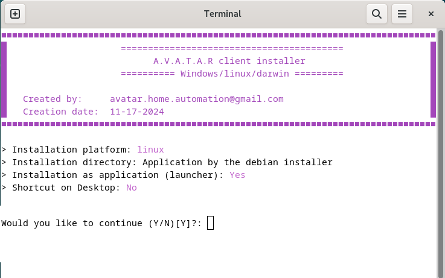
For an installation as macOS application:
> ./installer.ps1 -application
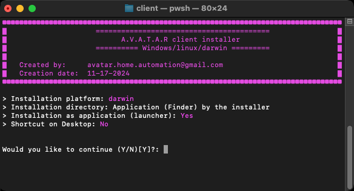
You can stop or start the installation by answer "Y" or "N" ("Y" by default).
Note
The installer warns you with messages if anything might prevent installation.
See the next step in the tab below regarding your platform.
Client installation continues automatically until you reach the certificate creation stage, where you are asked a question.
The only thing to remember is the passphrase you need to define to encrypt the Certificate Authority (CA) and rewrite it when prompted. If you don't know what to put, you can, for example, enter avatar or something similar.
All next other actions are automatic.
-
Creating private key of the Certificate Authority (CA):
- Enter a pass phrase to encrypt the private key
- Verify the sentence by re-entering it
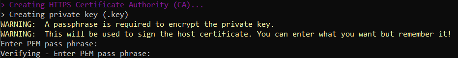
Warning
If you see the message below, you haven't entered the passphrase correctly.
Stop the installer and try again !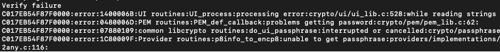
-
Creating the .pem Certificate Authority (CA):
- Enter the pass phrase used to encrypt the CA private key
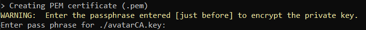
-
Creating the .crt host certificate:
- Enter the pass phrase used to encrypt the CA private key
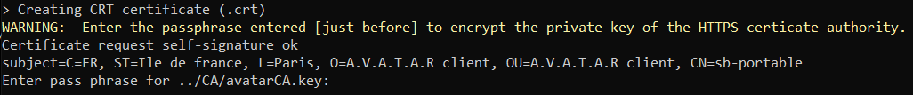
Client installation continues automatically. Depending on whether you have chosen the -application option, you will be prompted to enter the linux user's password.
Otherwise, the only thing to remember is the passphrase you need to set to encrypt the certification authority (CA) and rewrite it when prompted. If you don't know what to put, you can, for example, enter avatar or something similar.
All next other actions are automatic.
-
Installing A.V.A.T.A.R client as application:
This step only appears if the
-applicationparameter is present in the command (for an installation with the-directoryparameter, this step is ignored).
Enter the user's password to copy the client to the Applications directory.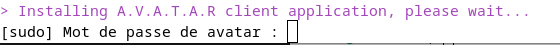
-
Creating private key of the Certificate Authority (CA):
- Enter a pass phrase to encrypt the private key
- Verify the sentence by re-entering it
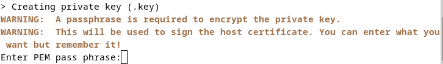
Warning
If you see the message below, you haven't entered the passphrase correctly.
Stop the installer and try again ! -
Creating the .pem Certificate Authority (CA):
- Enter the pass phrase used to encrypt the CA private key
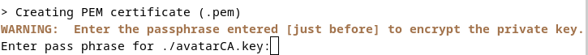
-
Creating the .crt host certificate:
- Enter the pass phrase used to encrypt the CA private key

Client installation continues automatically until the IP address has been verified in the /etc/hosts file.
Then, the only thing to remember is the passphrase you need to set to encrypt the certification authority (CA) and rewrite it when prompted. If you don't know what to put, you can, for example, enter avatar or something similar.
All next other actions are automatic.
-
The installer checks the presence of the IP address in the /etc/hosts file:
- If the IP address is not in the hosts file, you have to open a NEW terminal and add it manually by following all steps displayed in the installer console, otherwize this step is ignored.
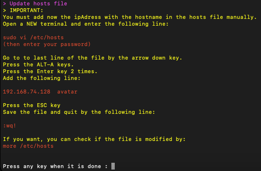
-
Creating private key of the Certificate Authority (CA):
- Enter a pass phrase to encrypt the private key
- Verify the sentence by re-entering it
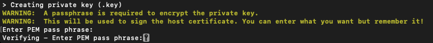
Warning
If you see the message below, you haven't entered the passphrase correctly.
Stop the installer and try again ! -
Creating the .pem Certificate Authority (CA):
- Enter the pass phrase used to encrypt the CA private key
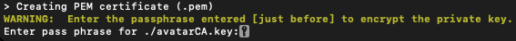
-
Importing the certificate to the keystore:
- Enter your user password
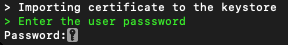
- if needed, enter your user password to unlock the keystore
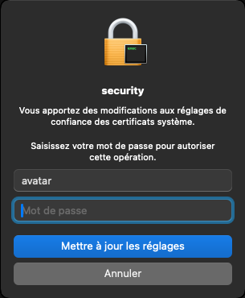
-
Creating the .crt host certificate:
- Enter the pass phrase used to encrypt the CA private key
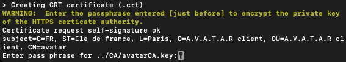
The CA is created for a period of 10 years and the installer adds the certificate to the keystore.
End of the installation
At the end of the installation, the following message should appear:
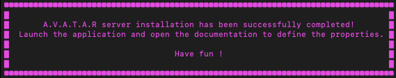
Warning
If this message does not appear, an error has stopped the installation.
You can check the error on the terminal or in the ./client-installer.log file.
Once you've corrected whatever prevented the installation from continuing, you can retrieve the command and run it again.
Checking Certificates installation
After the installation you can check the creation of the certificates.
Checking Certificate Authority:
- In Windows search, look for “Manage user certificates”.
- In the console, select "Trusted root certification authorities" -> "Certificates"
- Search for "A.V.A.T.A.R client CA" certificate

Checking host certificate:
- Open a Windows explorer.
- Change to the
-directory/resources/app/core/chrome/certificates directory - you must see a <hostname>.crt and and <hostname>.key certificat files
Checking Certificate Authority:
- Open a terminal
-
Enter the following command to verify if the certificate is valid:
certutil -d sql:$HOME/.pki/nssdb -L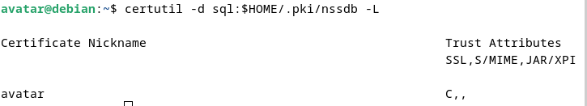
Checking host certificate:
- Open a file explorer
- Change to /usr/lib/a.v.a.t.a.r-client/resources/app/core/chrome/certificates directory
- you must see a <hostname>.crt and and <hostname>.key certificat files
Checking Certificate Authority:
- Open a Finder
-
Search for "Utility" -> "Keychain access"
-
Open "Keychain access"
- In the menu, select "System"
-
Search for "A.V.A.T.A.R client CA" certificate
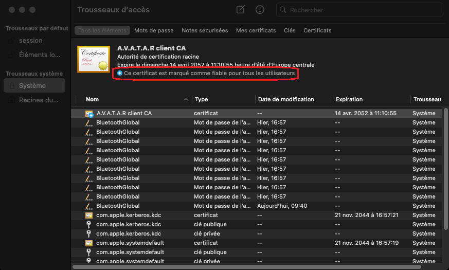
-
You should see "This certificate is marked as trusted for all users"
Checking host certificate:
- Open a Finder
- Click on A.V.A.T.A.R client application and select "Display package contents"
- Change to Contents/Resources/app/core/chrome/certificates directory
- you must see a <hostname>.crt and and <hostname>.key certificat files
Voices
A.V.A.T.A.R needs voices to dialog with you. There are two possibilities for selecting voices according to their availability:
- In the system language packs (
Local voices) - In Chrome speech synthesis (
Remote voices)
See the table below for available voices by platform:
| Platform | System voices | Google Chrome remote voices |
Comment |
|---|---|---|---|
| Windows | No action required. System and Chrome voices are available. |
| Platform | System voices | Google Chrome remote voices |
Comment |
|---|---|---|---|
| Linux | No system or Chrome voices available. Voices available through espeak and mbrola.The installer installs espeak and mbrola packages. |
| Platform | System voices | Google Chrome remote voices |
Comment |
|---|---|---|---|
| macOS | No action required. System and Chrome voices are available. |
Start A.V.A.T.A.R client
Tip
Start A.V.A.T.A.R server first!
Depending of the platform and the installation type, choose an action to start the client:
| Type | Action |
|---|---|
| Click on the executable | 1. Open a Windows explorer and change to the -directory parameter directory.2. Double-click on the A.V.A.T.A.R-Client.exe file |
| Shortcut | Click on the A.V.A.T.A.R client shortcut in the desktop environment |
| Parameter | Type | Action |
|---|---|---|
-application |
linux application | 1. Show applications and click on the A.V.A.T.A.R Client application |
-directory |
standalone | 1. Open a file explorer and change to the -directory parameter directory.2. Double-click on the A.V.A.T.A.R-Client file |
-directoryand -shortcut |
standalone | 2. Double-click on the A.V.A.T.A.R Client icon in the dock |
| Parameter | Type | Action |
|---|---|---|
-application |
macOS application | 1. Open a Finder and click on the A.V.A.T.A.R Client application |
-directory |
standalone | 1. Open a Finder and change to the -directory parameter directory.2. Double-click on the A.V.A.T.A.R-Client app For a shortcut, Options->Keep in dock |
Warning
Warning: if you have anti-virus software, it may notify you that the application does not have a valid digital signature.
Click on "always authorize".
The first connection window appears:

Add required information
- Enter the information required to start the client:
- The client name.
- The server's UDP search range:
- You can enter a search range in the format XXX.XXX.XXX.XXX-XXX
- For example:
- with 192.168.2.100-110, the client will look for the server at addresses 192.168.2.100 to 110
- You can also enter the server address directly, for example: 192.168.2.100
- For example:
- You can enter a search range in the format XXX.XXX.XXX.XXX-XXX
- The UDP search port:
- By default: 3333
- This port number must be identical to the one defined in the server properties.
- If you haven't changed it on the server, leave the default port.
- Click on "Save"
-
The client restarts
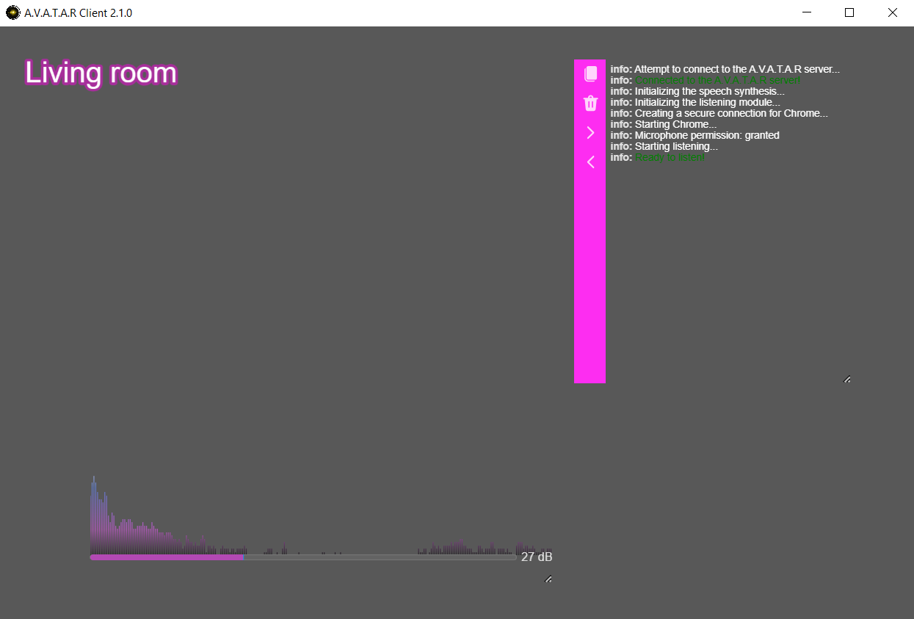
-
Check that the message "Ready to listen!" appears in green in the console.
Warning
If you see an error message in the client console, something went wrong during installation.
Check the client-installer.log file, correct the problem and restart the installer.
Checking the host certificate
Now, you can check if the certificate is valid in Chrome.
- In
Plugin Studio, click on thePluginstab, then click on theChromeplugin. -
Click on the
Propertiestab:- Uncheck the
headlessproperty to display Chrome on next startup and check if the certificate is valid as the example below:
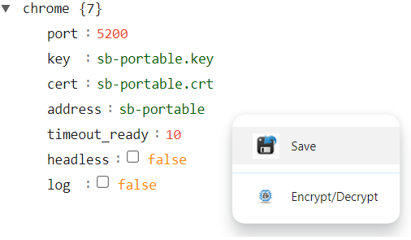
Tip
The key and crt files and the adress are automatically set by the installer.
In the screenshot, a “sb-portable” is placed in the fields.This is just an example for the documentation!
You should see the name of your
<server name>.crtand<server name>.keyfiles and your server name. - Uncheck the
-
Right-click and click
Saveto save the properties - Close the window using the cross.
- Restart the client.
- After restarting the client, Chrome appears.
-
Check that the HTTPS certificate is valid in the Chrome browser.
Expected result (remember, the
sb-portablehostname is only a example, you must see the hostname of your platform):
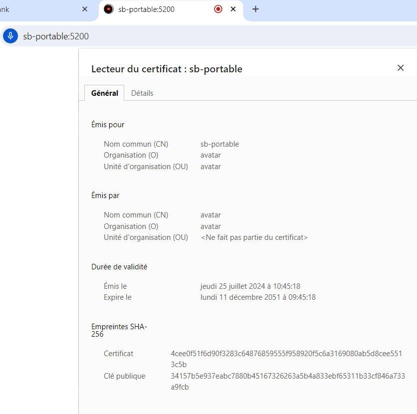Warning
If your certificate is not valid, maybe the certificate has not been made correctly.
Check the client-installer.log file, correct the problem and restart the installer. -
Open
Plugin Studioagain and change theheadlessproperty to true to hide Chrome the next time it is started. Do not forget to save the properties: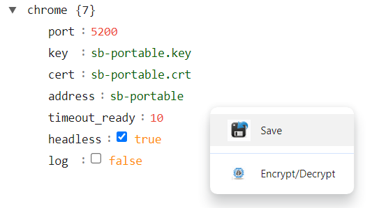
Tip
Chrome properties are defined in a
chromeplugin so that they can be easily modified from withinPlugin Studio.Never delete this plugin, or the client will stop working!
Mandatory parameters
You're starting the client for the first time.
Although some client properties have been configured automatically, others need to be changed quickly.
- Do a right click here and select 'Open link in new tab' to display the
Client Settingspage access. -
Then, change these parameters to complet the installation:
- Dialog language - Mandatory -
- Defines the language used for voice rules.
- By default the language is seted to "English".
- You have to define the language you want and associated voice parameters (
voice preferenceandcurrent voice).
-
Trigger keywords - Optional/Mandatory -
- Defines trigger keywords to start listening.
- The default keywords are "Sarah" and "Jarvis".
Warning
Depending on the language you've chosen, the
Trigger keywordsmay not be understood.
If you've changed the dialog language, you'll need to change the trigger keyword. -
Rules - Optional/Mandatory -
- Defines phrases that are used by you or by the client when replying to you.
- At the installation, these parameters are set in "English" language.
- If you've changed the dialog language, you'll need to change the rules.
- Application language - Optional -
- Defines the language used for all graphical interfaces and application messages.
- At the installation, this parameter is set to "English".
- If "English" is the language you need, you can bypass this step.
- The background image - Optional -
- A Background image for the client. Not mandatory but so much nicer!
- Dialog language - Mandatory -
Test the installation
You can now test the installation by downloading your first plugin.